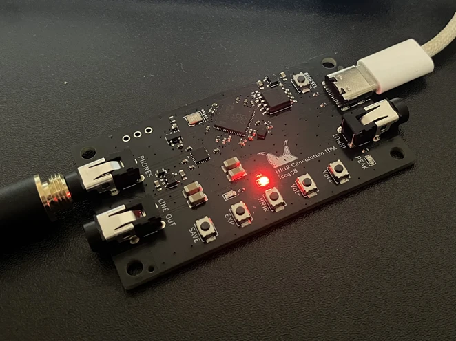
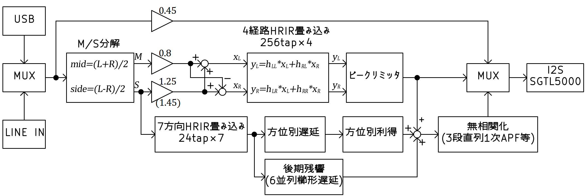
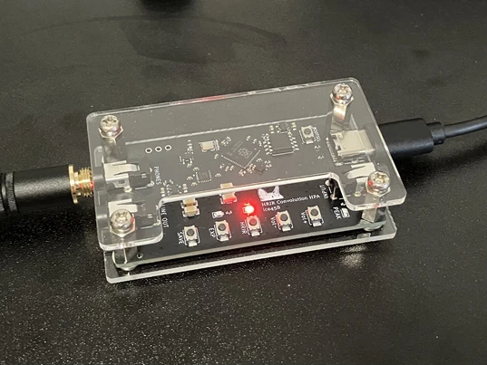

HRIR (頭部インパルス応答) の畳み込みによって、ヘッドホン再生でも音像を頭の外へ出す「頭外定位」を狙ったヘッドホンアンプ兼USB DACを作りました。RP2350とSGTL5000を使い、4経路256タップのFIR畳み込みに加え、方向別の反射処理や後期残響、オールパスフィルタによるデコリレーション処理までを48kHzのまま実時間で処理しています。
自作オーディオは測定値を追い求める方向や音や回路の面白さを追い求める方向、ヴィンテージな方向などいろいろありますが、このようなデジタル信号処理モリモリもなかなか楽しいです。

完成したHRTFヘッドホンアンプ
ヘッドホンで音楽を聴くと、音像が頭の中や耳のすぐ近くに貼りついたように聞こえます。これを「頭内定位」と呼びます。これが独特の聞き疲れや閉塞感を生みます。スピーカーで聴いたときのように、音像が前方の空間に広がって聞こえるのが「頭外定位」です。一般的なヘッドホン再生で頭内定位になってしまうのは、左右のレベル差しか情報が無く、本来耳に到達するはずの頭部や耳介での反射・回折による周波数特性の変化や、左右耳への到達時間差が失われているためです。
この失われている情報を数値化したものがHRTF (頭部伝達関数) およびその時間領域での表現であるHRIRで、オープンデータとして多くのHRIRデータベース (本機ではSADIE IIを採用) が公開されています。本機はこれをヘッドホン信号に畳み込むことで、ヘッドホン再生でもスピーカー再生のような頭外定位感を目指したものです。単に畳み込むだけでなく、前後の初期反射や拡散音場を付加することで、より自然な空間感を得られる機能もあります。
本機に至る前段として、まずアナログ段のクロストークを限界まで削いだ低クロストークヘッドホンアンプを作りました。定位の精度は確かに増したものの、聴き込むうちに中央の音が無いかのような違和感が気になるようになりました。逆に意図的にクロストークを加えたらどう聞こえるのかを確かめたくなり、後にクロストーク量を任意に可変できるアンプも作りました（記事化はまだですが要約はこちら）。そこで分かったのは、左右同位相の単純なクロストークは聴感への影響が当初の想像よりずっと小さいということと、ヘッドホンではそもそも頭内定位の違和感をなくすのは難しそうということでした。空間感を変えるには時間差や周波数特性の違いまで含めて加える必要がある、という感触を得たので、それをHRIRの畳み込みでまとめて再合成しようというのが本機です。
仮想的にスピーカーを自身の左右前方 ±45° に設置した状況を再現します。このとき、左スピーカーから出た音は左耳だけでなく右耳にも回り込んで到達し、右スピーカーから出た音も同様です。したがって、耳に届く信号は次のクロスフィードを含んだ2×2の畳み込みで表現できます。
$$ \begin{pmatrix} y_L \\ y_R \end{pmatrix} = \begin{pmatrix} h_{LL} & h_{RL} \\ h_{LR} & h_{RR} \end{pmatrix} \ast \begin{pmatrix} x_L \\ x_R \end{pmatrix} $$
\(h_{LL}\) は左スピーカーから左耳、\(h_{LR}\) は左スピーカーから右耳に到達するHRIRです。右側も同様で、合計4経路を畳み込むことで、左右耳に届く音が「前方に置かれたスピーカーから届いた音」に近づきます。頭の形状や耳介は人によって異なるため、HRIRの切り替えで複数の被験者のデータを比較できるようにしました。
ヘッドホン出力とライン入力、USB入力を持ち、マイコンはRaspberry Pi Pico 2と同じRP2350Aを使用しています。コーデックには入出力を一体で賄えるSGTL5000を使い、こちらをI2Sマスターとして48kHz / 24bitで動作させ、Pico側はPIOでI2Sスレーブとして受け取る構成にしました。MCLKはSGTL5000が要求する12MHzを、SYSCLK 252MHzからPWMによる整数分周 (252 / 21) で生成しています。オーバークロックは分周が整数比になる点と、DSP処理に十分なサイクル余裕を確保するために必要でした。
回路図
操作系はHRIR切替、EXP (音場拡張) のON/OFF、音量、状態保存の計5ボタンと、現在の動作状態を示すLED 3個 (HRIR / EXP / PEAK) を備えています。状態の保存/復元はフラッシュの最終セクタにチェックサム付きで書き込みます。書き込み時はCore1を停止し、DMAとPIOを完全に止めてから実行することで、オーディオ処理と安全に両立させています。
DSPはCore1で動作させ、Core0はUSBやボタン、LEDといったUI処理に専念させる構成としました。DMAのダブルバッファ (1バッファあたり128フレーム ≒ 2.67ms) が完了するたびに割り込みが入り、その中で1ブロック分の処理を行います。動作モードは以下の3種類で、ボタン操作で切り替えます。

信号処理のブロック図(概略)
I2Sから受け取る32bitワードは上位24bitに音声データを左詰めで持っています。内部処理は24bit符号付き整数を基本とし、FIRの履歴と係数はQ15、積和の累算器はQ30 (int64) で持ちます。
| 段階 | 形式 | 値域 | 備考 |
|---|---|---|---|
| 入出力ワード | int32 (24bit左詰め) | ― | I2Sのデータ形式 |
| 24bit整数 | int32に格納 | ±8 388 607 | 内部処理の主要形式 |
| Q15固定小数点 | int16 | ±1.0 ≒ ±32 767 | FIR係数と履歴 |
| Q30累算器 | int64 | Q15×Q15の積和 | 内積計算用 |
ワード ⇔ 24bit整数の変換は、それぞれ8bit右シフトと、飽和後に8bit左シフトで行います。
入力をそのまま0.45倍に減衰して出力します。これにより他モードとの聴覚上の音量差を低減します。
$$y_L = 0.45 \cdot x_L,\quad y_R = 0.45 \cdot x_R$$
1. 中央・側方分離と仮想スピーカー再配分: ステレオを和差で中央成分 \(M\) と側方成分 \(S\) に分解し、±45° の仮想スピーカー信号へ再配分します。
$$M = \frac{x_L + x_R}{2},\quad S = \frac{x_L - x_R}{2}$$
$$L_{spk} = 0.8\,M + 1.25\,S,\quad R_{spk} = 0.8\,M - 1.25\,S$$
全体に0.45のヘッドルームを乗せた後、瞬時ピークリミッタで0.9 FS以下にクリップ抑制します。
2. Q15化と履歴書き込み: 24bit整数を9bit右シフトしてQ15にし、係数長の2倍の長さで確保した履歴バッファの「書き込み位置」と「位置＋係数長」の両方に同じ値を書きます。これにより巡回参照が線形アクセスに変換でき、畳み込みループから分岐を追い出せます。
3. 4経路主畳み込み: 左右入力それぞれに同側 / 対側のHRIRを畳み込み、4経路分を加算します。16bit×2を1サイクルで64bit累算器へ積和するDSP拡張命令を使い、2タップを同時に処理しています。
$$y_L[n] = \sum_{k=0}^{N-1} h_{LL}[k]\,q_L[n-k] + \sum_{k=0}^{N-1} h_{RL}[k]\,q_R[n-k]$$
$$y_R[n] = \sum_{k=0}^{N-1} h_{LR}[k]\,q_L[n-k] + \sum_{k=0}^{N-1} h_{RR}[k]\,q_R[n-k]$$
Q30累算器を6bit右シフトして24bitスケールに戻し、0.70倍のヘッドルームとピークリミッタを掛けて直接音とします。この関数はSRAMに配置し、フラッシュのキャッシュミスによるレイテンシ悪化を防いでいます。48kHzでは毎秒およそ4900万回の積和演算となります。
4. ボリュームと出力: ホスト音量とボタン音量を合成したQ15ゲインを掛け、24bit左詰めの32bitワードへ戻してI2Sに流します。
頭外定位モードの処理を実行 (ただし側方利得は1.25 → 1.45に増加) した上で、以下を加えます。
1. 側方信号の履歴: 側方成分 \(S\) をQ15化し、反射用の履歴バッファへ書き込みます。
2. 方向別反射と遅延線: 7方向 \(d \in \{0,\dots,6\}\) について、側方信号を方向別の短いHRIRで畳み込み、0.70倍のヘッドルームを通して方向別の遅延線 (最大2016サンプル ≒ 42ms) にずらし、方向別利得 \(g_d\) を掛けて加算します。これが初期反射 \(E_L, E_R\) です。左右それぞれに反射を作るため、短いFIR（24タップ）は7方向 × 2耳で合計14本が並列に動いています。方位角 \(\theta_d\) は正面を0°、右回りを正、左回りを負として、左右対称なペアで前方寄りから後方へ並べています。
$$E_L = \sum_d g_d \cdot r_L^{(d)}[n - D_d],\quad E_R = \sum_d g_d \cdot r_R^{(d)}[n - D_d]$$
このモードでは、主畳み込みが4経路 × 256タップ、方向別反射が7方向 × 2経路 × 24タップです。48kHz動作では、主畳み込みだけで毎秒約4,900万回の積和 (MAC) になり、方向別反射を足すと \((4×256 + 7×2×24)×48000 = 65,280,000\) より、合計で毎秒約6,500万回の積和演算を行っています。
| 方向 \(d\) | 方位角 \(\theta_d\) | 遅延 \(D_d\) (サンプル) | 利得 \(g_d\) |
|---|---|---|---|
| 0, 1 | −75°, +75° | 384 | 0.110 |
| 2, 3 | −110°, +110° | 816 | 0.080 |
| 4, 5 | −135°, +135° | 1344 | 0.056 |
| 6 | 180° | 2016 | 0.036 |
3. 後期残響 (6並列櫛形遅延): 反射駆動信号と初期反射のSide差分を主体に、Mid和成分も少量 (0.02倍) 混ぜて励振信号 \(e\) を作り、長さの異なる6本の遅延線 (1499 / 1777 / 1999 / 2357 / 2753 / 3251サンプル) に並列に供給します。Side主体とすることで定位の芯を残しつつ、Midを少量加えることでセンター定位の音にも自然な残響が乗ります。各ラインは1次低域フィルタで高域を減衰させてからフィードバックします。
$$e = \underbrace{0.30 \cdot \frac{r_L^{drive} - r_R^{drive}}{2} + \frac{E_L - E_R}{2}}_{\text{Side 励振}} + 0.02 \left( \underbrace{0.30 \cdot \frac{r_L^{drive} + r_R^{drive}}{2} + \frac{E_L + E_R}{2}}_{\text{Mid 励振}} \right)$$
$$\text{lp}_i \leftarrow \text{lp}_i + 0.58\,(d_i - \text{lp}_i),\quad \text{buf}_i[\text{pos}_i] \leftarrow e + 0.66\,\text{lp}_i$$
6本の遅延出力から、平均値 \(M_r\) と左右で重み符号を変えた \(D_L, D_R\) を作り、\(M_r + 0.38(D_L - M_r)\) のように混合して0.58倍したものを残響成分 \(L_{late}, R_{late}\) とします。
4. 合算と側方の無相関化: 直接音・初期反射・後期残響を加算して \(p_L, p_R\) とし、再度中央・側方に分解します。側方成分に対して左右で異なる遅延長 (左耳: 149/350/658、右耳: 226/437/830) の3段直列1次オールパスフィルタを通し、左右間の位相相関を崩します。各段は次式です。
$$y[n] = \text{buf}[\text{pos}] - 0.55 \cdot x[n],\quad \text{buf}[\text{pos}] \leftarrow x[n] + 0.55 \cdot \text{buf}[\text{pos}]$$
オールパス出力を原側方と0.30の混合比でブレンドし、中央と再合成して0.74倍のヘッドルームとピークリミッタを掛けます。
$$\text{out}_L = 0.74\,(M_p + S'_L),\quad \text{out}_R = 0.74\,(M_p + S'_R)$$
5. ボリュームと出力: 他のモードと共通の最終段で、合成ゲインを掛けてI2Sに送出します。
SADIE IIは被験者ごとに大量のHRIR WAVを持つデータベースで、全方向を実機に載せるのは現実的ではありません。そこで、オフラインのPythonスクリプトで必要な方向 (±45°, EL=0°) に最も近いWAVを選び、Q15量子化してCヘッダとして書き出しています。方向別反射用の7方向分についても同じスクリプトで抽出し、全方向をまとめて目標ピーク0.22に正規化してから格納しています。
USB側はTinyUSBを使ってUAC2.0 Speaker + CDCの複合デバイスとして実装しています。CDCは起動ログや内部状態 (モード、HRIR番号、EXP、CPU使用率など) をシリアル経由で出すために常設しており、UAC2と同じUSB接続上に同居させています。
USB Audioの非同期転送では、ホストの送出レートとデバイス側の再生レート (本機はSGTL5000の内部クロック) がわずかにずれるため、どこかで吸収する必要があります。一般的にはフィードバックエンドポイント経由でデバイスからホストへ補正値を送る設計が推奨されますが、WindowsのUAC2標準ドライバはFull-Speed動作時でもフィードバック値を16.16フォーマット (本来は10.14) で要求するという仕様逸脱があり、iOSやmacOSと同時に両立させるのはとても大変です。
本機ではフィードバック送出を完全に無効化し、代わりに消費側 (I2S送出側) で流量を吸収する方針としました。USB側はリングバッファに受信データを積みます。リング残量がデッドバンド (±128語) を超えたら、そのバッチ内で最初に見つかる無音フレームを複製または破棄し、無音が見つからずハードリミット (±768語) を超える場合のみバッチ全体で線型補完によるリサンプルを行います。線型補完といってもN=16程度の動きなので、ピッチ変動は6 cent以下に収まり、聴感上はほぼ検知できません。
Windows側で既定の再生デバイスを切り替えると、UAC2はAlt 0 ⇆ Alt 1の切り替えが頻繁に発生します。Pico SDKのUSBドライバには、すべてのEPが閉じられるまでDPRAMのポインタをリセットしない仕様があり、CDCを常時開いている本機の構成ではこの切り替えを繰り返すうちにDPRAMが枯渇し、5回目でhard_assertに落ちる問題がありました。これはTUP_DCD_EDPT_ISO_ALLOC = 1を有効にし、起動時にISO用バッファを1度だけ固定確保する方式で回避しています。あわせてAlt 0遷移時に受信中断フラグが残留し、Alt 1復帰時にpanicする問題も、ISOエンドポイントのバッファ制御レジスタを手動でクリアして受信を停止させることで解消しました。
Core1の処理サイクルをDWT CYCCNTで測定し、1バッファ分 (128フレーム) の処理に掛かるサイクル数をCDC経由で1秒ごとに出力できるようにしています。予算はSYSCLK × 128 / 48000で、252MHz動作時はおよそ67万サイクルです。音場拡張OFFでは主FIRが支配的で52% 前後、音場拡張ONでは方向別反射と後期残響が加わって92% 前後という結果になりました。
パススルーモードから頭外定位モードへ切り替えると、音像が耳の近くから前方へ移動するのがはっきり分かります。ただしHRIRは本来、個人の耳介・頭部形状に合わせたものが最適なので、SADIE IIの被験者すべてが自分の耳に合うわけではありません。何人かを切り替えて、最も自然に前方から聞こえるデータを選ぶ使い方が基本となります。音場拡張をONにすると空間の広がりが強まり、臨場感が増します。ライブ音源などを聴くと非常に楽しいです。

アクリルパネルで挟んだ